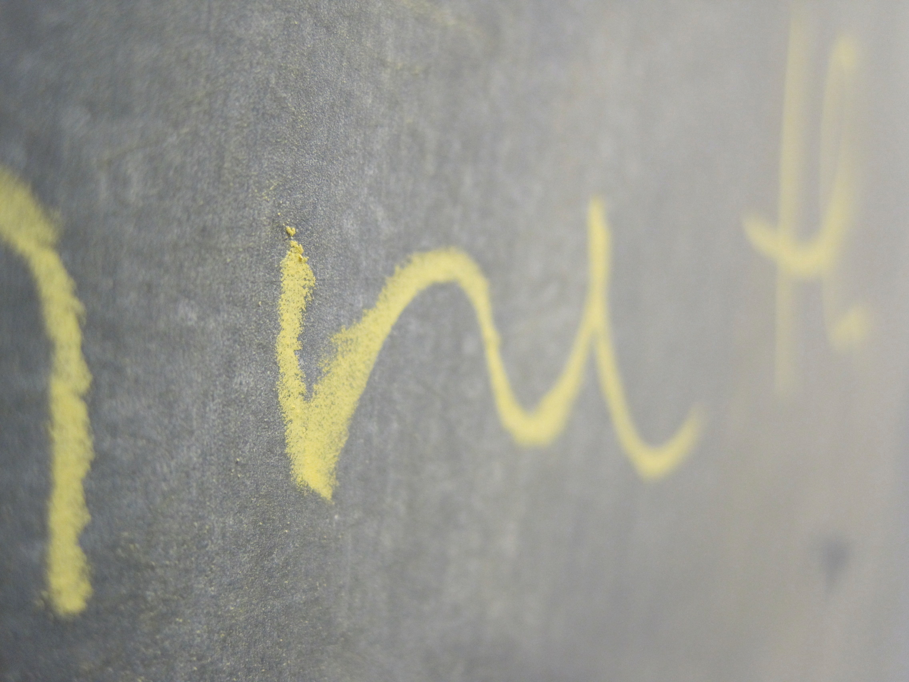

teaching philosophy
My teaching philosophy is that teaching is a conversation; a conversation that is held explicitly with the permission of the student. Students may be compelled to attend classes, they may be compelled to store and retrieve information, but they cannot be compelled to learn except at their own behest. Since the goal of teaching is the initiation of learning and not simply the dispensation of facts, an effective educational environment is one in which the teacher is a tool used by the student in his or her own investigation of the subject.

courses
organismal biology
In this course we explore the structural and functional organization of plants and animals. We use a combination of lecture and discussion to investigate how these groups solve the principal problems of life (i.e., energy, nutrients, homeostasis, information processing, and reproduction). The course includes a lab, which focuses on developing sound research and analytical skills through increasingly independently designed studies of plant and animal biology.
human anatomy
In this course we focus on the structural and functional organization of the human body. We use primarily a regional approach to the study of anatomy and emphasize a conceptual understanding of the body as an integrated unit. In addition we employ case frequent case studies to investigate the clinical implications of alterations to anatomy due to injury or disease. The laboratory portion of the course is based around the dissection of a cat and other animal models.